전후 건축 붐이 남긴 좀비 건물
발표는 AI 이야기가 아니라 건축 이야기로 시작해요. 2차 세계대전이 끝나고 미국에서는 역사상 가장 큰 건축 붐이 일어났어요. 전쟁에서 돌아온 사람들, 새 기술과 새 공법이 한꺼번에 몰렸죠. 이때 건축가들이 가져다 쓴 게 1920년대의 모더니즘이에요. 단순한 기하학, 장식 없는 맨 표면, 단색 팔레트가 특징이에요.
발표자는 모더니즘 자체를 탓하지 않아요. 처음 만든 사람들에게는 분명한 의도가 있었다고 봐요. 아래 슬라이드 오른쪽 건물 벽에 세로로 'BAUHAUS'라고 적혀 있어요. 이런 건물 뒤에는 원칙이 있었다는 거예요.
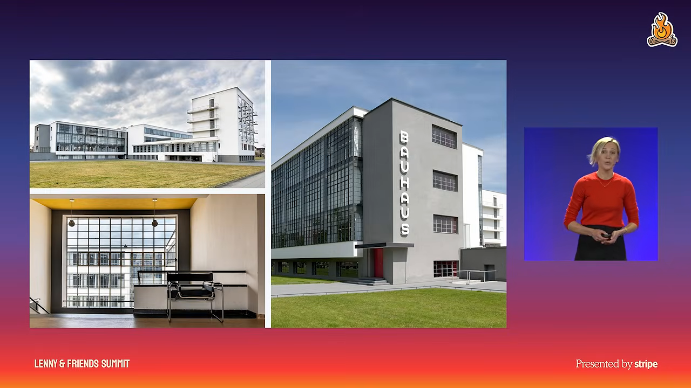
문제는 전쟁 뒤였어요. 빨리 지어야 한다는 압박 속에서 양식만 계속 복사됐어요. 생각은 점점 얇아지고, 그 자리에 맞지 않는 패턴만 남았어요. 발표자는 은행 건물 두 장을 나란히 보여 줘요. 첫 장은 Rochester Savings Bank 건물이에요. 층층이 쌓인 창과 장식이 신뢰와 안정감을 드러내요.
다음 장은 Macon-Atlanta State Bank예요. 낮은 상자 모양에 통유리, 주차장 안내판이 전부예요. 은행이라는 표시가 없으면 무슨 건물인지 알기 어려워요.
이런 건물은 수십 년 동안 지어져 지금도 곳곳에 있어요. 슬라이드는 서로 구분이 안 되는 건물 사진 수십 장을 바둑판처럼 깔아요. 발표자는 이걸 좀비 건물이라고 불러요. 사용자도, 주변에 사는 사람도, 맥락도, 브랜드도 신경 쓰지 않은 건물이라는 뜻이에요.
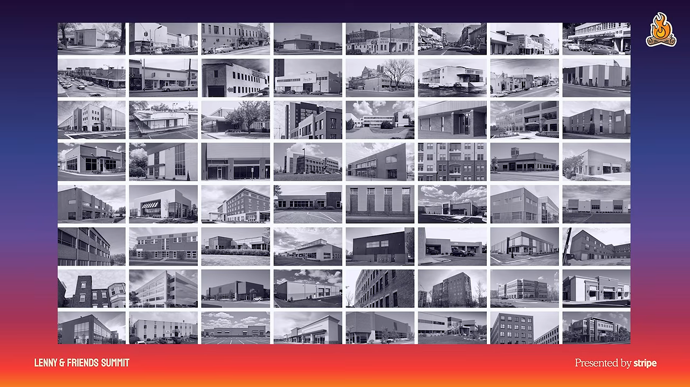
AI 건축 붐의 세 가지 경고
발표자는 지금을 또 한 번의 건축 붐, 'AI 건축 붐'이라고 불러요. 누구나 만들 수 있고, 세 명짜리 팀이 예전에 30명이 필요하던 일을 해요. 그런데 전후 건축 붐과 닮은 점이 있어요. 발표자는 이걸 경계해야 할 신호 세 가지로 정리해요. 아래 그림은 세 신호가 어떻게 한곳으로 모이는지 보여 줘요.
첫째, 그럴듯함
LLM은 가장 확률이 높은 답을 잘 말해 줘요. 다시 말해 지금까지 유행했던 것, 통했던 것을 잘 알아요. 반대로 나와 내 브랜드, 내 사용자의 맥락에 맞는 고유한 답은 잘 못 내요. 발표자가 퀴즈를 내요. 검은 바탕에 'Utah's #1'이라는 큰 글씨와 빨간 버튼이 있는 아래 사이트는 무엇을 팔까요?
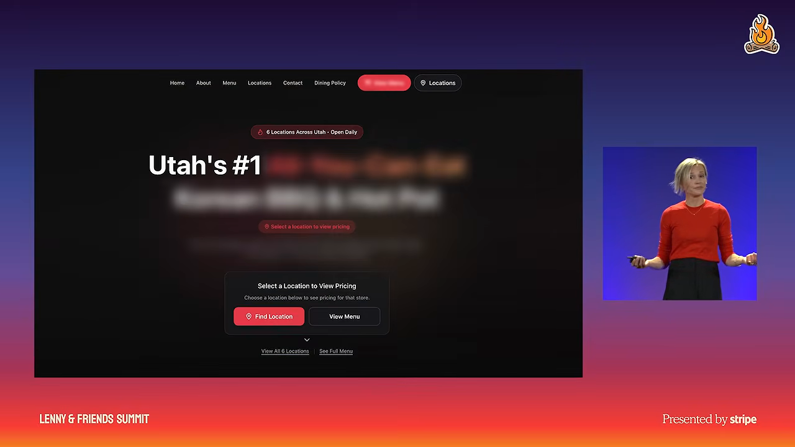
둘째, 완성의 유혹
AI는 결과물을 너무 빨리, 너무 일찍 '끝난 것처럼' 보이게 해요. 발표자는 부끄럽다며 자기 점심 이야기를 꺼내요. 냉동실에서 돌덩이 같은 부리토를 꺼내 전자레인지에 넣으면 90초 만에 점심이 돼요. 거의 못 먹을 맛인데도 속도에 반해서 넘어가게 된다는 거예요.
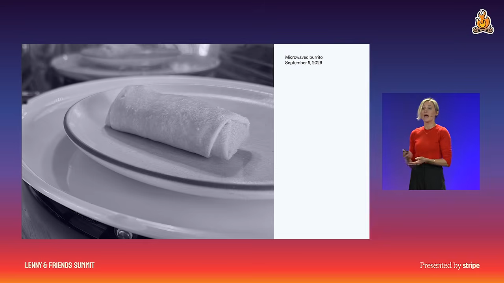
AI도 똑같아요. 문장 하나를 치면 둥근 모서리와 그림자가 있는 화면이 뚝딱 나와요. 다 된 것 같지만, 정말 문제를 푸는지, 정말 차별화되는지는 따로 물어봐야 해요.
셋째, 일회용
만들기가 너무 쉽고 빠르니 결과물이 버려도 되는 것처럼 느껴지고, 실제로 그렇게 다뤄지기도 해요. 그러면 '누가 이걸 유지보수하지?' 같은 장기적인 책임이 흐려져요. 세 신호가 겹친 모습으로 발표자는 터키의 실제 장소를 보여 줘요. 똑같이 생긴 성 모양 집이 산비탈을 빽빽하게 메운 사진이에요. 이 사진을 올린 트윗에는 'everyone and their vibecoded website'라는 글이 붙어 있어요.
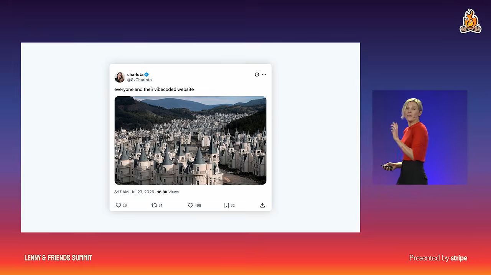
정성이 느껴지는 소프트웨어는 어떤 모습일까요
우리는 깨어 있는 시간의 절반을 화면을 보며 보내요. 그러니 누군가 신경 써서 만든 소프트웨어를 원하죠. 발표자는 작은 예를 세 개 들어요. 첫째는 Grok Bot 앱이에요. 설정 화면 맨 아래에 검은 동그라미 캐릭터가 있고, 작은 애니메이션으로 살아 움직여요.
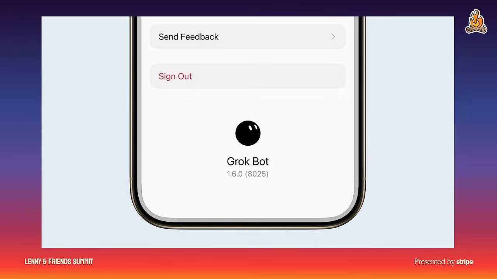
둘째는 캘린더예요. 브라우저 탭과 앱 로고 아이콘에 오늘 날짜인 10이 찍혀 있어요. 매일 무심코 지나치는 디테일이지만, 만든 사람이 사용자를 생각했다는 증거라고 해요.
셋째는 Link의 agent wallet이에요. 화면은 에이전트와의 대화예요. 에이전트가 항공권 일정과 가격 470달러를 보여 주고, 예약을 마치려고 이름과 여권 정보를 물어요. 발표자는 이 제품이 에이전트가 온라인에서 결제하다 막힐 상황을 미리 예상하고, 문제 해결 흐름을 처음부터 넣어 뒀다고 설명해요. 사용자가 사람이 아니라 에이전트일 때도 그 맥락을 헤아린 거예요.
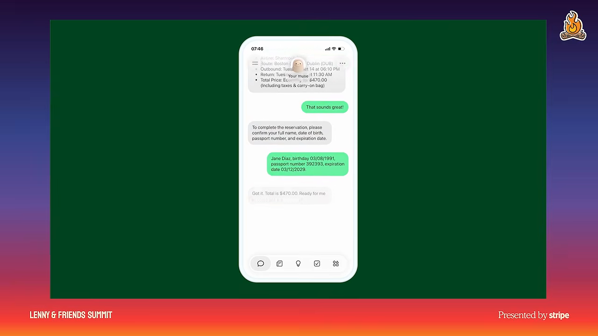
발표자는 이런 예가 사용자를 아끼는 만드는 사람의 마음, 브랜드의 성격, 그리고 '영혼'을 보여 준다고 말해요. AI가 좀비 UI의 원인이 되기도 하지만, AI로도 이런 제품을 만들 수 있다면서 네 가지 제안으로 넘어가요.
제안 1: 관점을 먼저 가져요
첫 번째 제안은 관점을 가지라는 거예요. 관점이 없으면 AI가 대신 정해 줘요. 앞에서 본 것처럼 그 관점은 평범하고 과거를 향해 있을 가능성이 커요. 그래서 먼저 정해야 할 질문이 있어요.
- 우리 브랜드는 나에게, 그리고 사용자에게 무엇인가요?
- 사용자에게 어떤 존재가 되고 싶나요?
- 사용자는 무엇을 중요하게 여기나요?
이 답이 품질 기준의 바탕이 돼요. 발표자는 어느 시대에나 할 말이지만 지금 더 중요하다고 강조해요. 만드는 사람이 여기저기 흩어지면 책임도 흐려지고, AI에게 판단을 떠넘기기 너무 쉬워지기 때문이에요.
Stripe가 '낙관'을 디테일에 담는 방식
Stripe는 낙관(optimism)을 중요하게 여겨요. 그래서 고르는 색, 글 쓰는 방식, 다루는 주제, 창업자를 돕는 제품에 모두 이걸 담으려 해요. 아래 Stripe 홈페이지에서 오른쪽을 휘감는 주황·분홍·보라 그라데이션 띠가 그 예로 보여요.
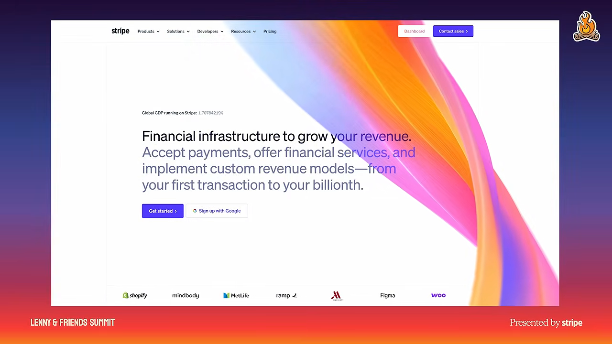
모두가 함께 만들고 많은 게 빠르게 바뀌니, 이런 디테일에 대해 미리 합의해 두는 게 중요해요. 합의가 없으면 어디서 마찰이 생기는지 발표자가 예를 들어요. 디자인 크리트에서 광고 시안을 보던 자리예요. 시안은 탄산음료 속 얼음 조각을 Stripe 로고의 평행사변형 모양으로 만든 이미지였어요.
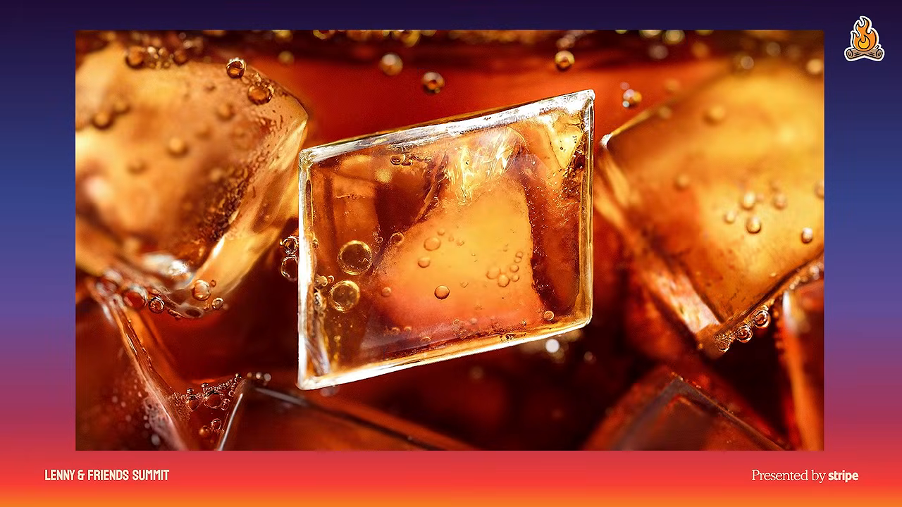
그 자리에 빨리 내보내고 싶던 다른 직군 동료가 이렇게 물었어요.
What's the quality standard for something made with AI?
AI로 만든 것의 품질 기준은 뭔가요?
— 영상 06:56
슬라이드는 이 질문에서 'for something made with AI' 부분에 줄을 그어 지워요. 어떻게 만들었는지는 사용자에게 중요하지 않다는 뜻이에요. 사용자는 좋은지 아닌지만 신경 쓰고, 그러니 만드는 사람도 그래야 한다는 거예요. 이 논의로 무엇을 노리는지 합의가 생겼고, 팀은 개선점 17개를 들고 나왔어요. 아래 피드백 문서는 A부터 Q까지 17개 항목을 시안 위 위치와 짝지어 표시해요. '모서리가 너무 날카롭고 유리 같다', '거품이 조금 크다' 같은 지적이에요.
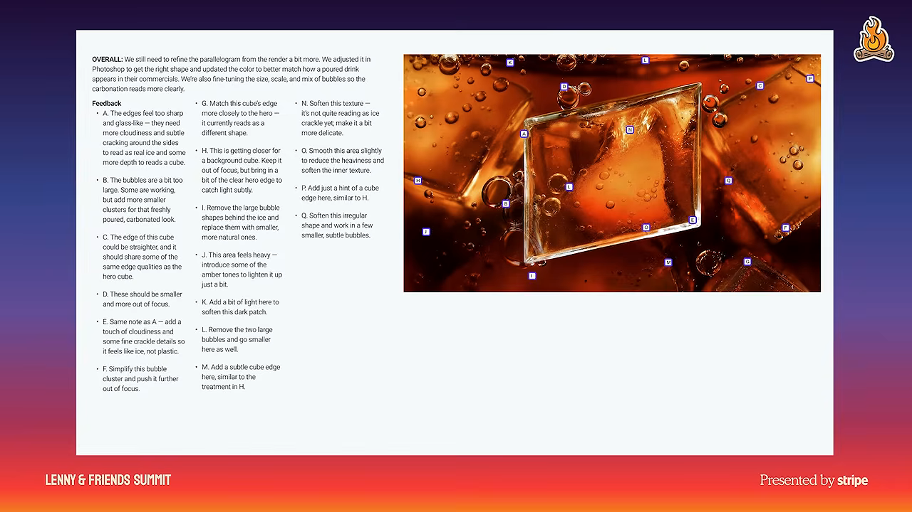
Stripe 사내에서는 이런 꼼꼼한 다듬기를 'Pepsi bubbling'이라는 동사로 부른대요. 발표자는 완벽을 노리는 게 아니라고 선을 그어요. 목표는 고객이 볼 수 있는 것보다 한 단계만 더 깊이 들어가는 거예요. 그 정성은 결국 고객에게 전해진다고 봐요. 에이전트까지 일에 끼어들어 하루에도 많은 게 바뀌는 지금, 이런 관점이 기준과 작업을 이끌어요.
관점은 어떻게 키울까요
발표자의 답은 '알아차리기'예요.
- 사용자가 말하는 것만이 아니라, 실제로 필요하고 원하는 것을 알아차려요.
- 주변 세상에서 무엇이 훌륭하고, 무엇이 좋고, 무엇이 그저 그런지 알아차려요.
- 쓰는 제품뿐 아니라 예술, 과학 같은 비슷한 다른 상황에서도 영감을 얻어요.
이렇게 쌓은 안목이 내 기준을 높이고, 그 기준을 이제 넓게 퍼뜨려야 해요. 그게 두 번째 제안이에요.
제안 2: 기준을 기계에 심어요
두 번째 제안은 기준을 기계에 심으라는 거예요. 모든 사람이 같은 이해를 공유하고 같은 결정을 내리면 좋겠지만, 현실은 달라요. 앞으로 많은 결정에 사람이 끼지 못해요. 발표자는 이미 벌어지는 일 세 가지를 들어요.
- 디자이너가 없는 자리에서 화면이 만들어져요.
- 우리가 자는 동안 에이전트가 문제를 찾아 고쳐요.
- 사용자에게 맞춰 생성형 UI가 실시간으로 그려져요.
그래서 디자인 시스템이 다시 주목받는다고 해요. 다만 어제의 시스템과 오늘의 시스템은 달라요. 예전에는 다 적어 둘 필요가 없었어요. 방에 늘 디자이너가 있어 빈칸을 채워 줬으니까요. 이제는 흩어진 사람과 에이전트가 만들어도 되도록 결정을 미리 정의해 둬야 해요. 발표자는 이걸 '디자인의 대상은 더 이상 화면이 아니라 시스템 자체'라고 정리해요.
구텐베르크가 만든 건 인쇄기만이 아니에요
모두 구텐베르크가 인쇄기를 만들었다고 알아요. 덜 알려진 건 그가 인쇄기 둘레에 만든 시스템이에요. 그는 대문자 26자와 소문자 26자만 만들지 않았어요. 폭이 다른 글자, 약어, 합자까지 290가지 글자를 만들었어요. 아래 성경 지면처럼 양쪽 정렬로 조판해도 단어 사이에 흰 공백이 강이나 호수처럼 흐르지 않게 하려는 거였어요.
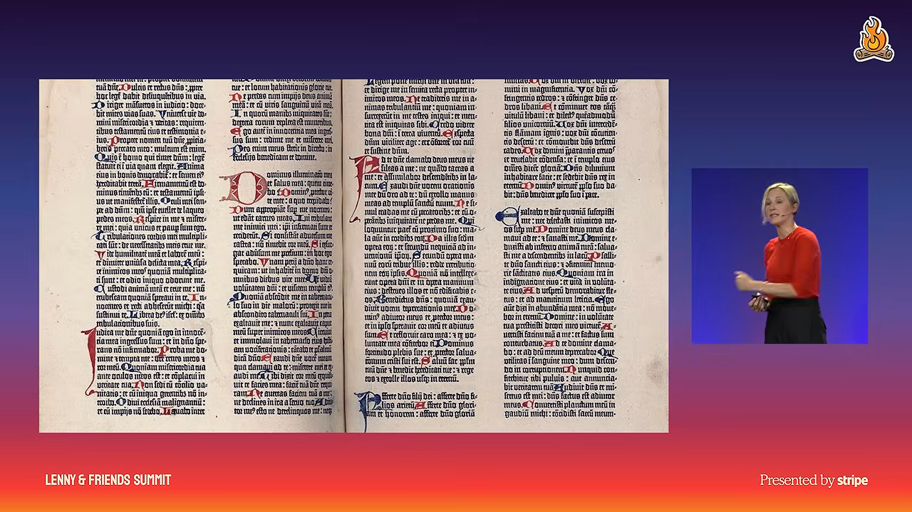
발표자는 이 시스템이 확장할 수 있으면서도 충분히 '의견이 강했다'고 말해요. 그래서 기계가 만들었는데도 손으로 만든 것만큼 좋게 느껴졌다는 거예요. 그리고 다음 슬라이드에 이 대비를 한 줄로 띄워요.
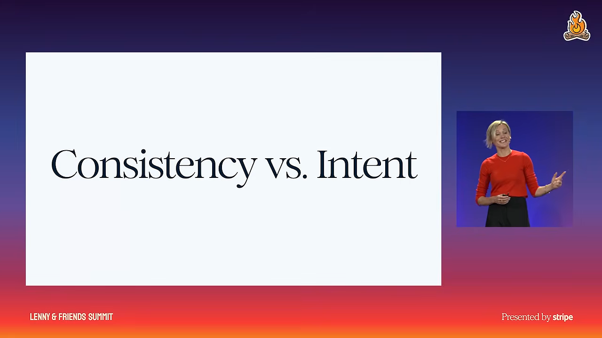
Stripe가 MCP에서 CLI로 옮겨 간 이유
Stripe의 목표는 만드는 사람이 프롬프트에서 실제 서비스까지 거의 바로 가게 하는 거예요. 처음에는 많은 팀처럼 디자인 문서를 아는 MCP(Model Context Protocol)로 시작했어요. 결과는 좋지 않았어요. 충분히 구체적이지 않았고, 같은 프롬프트를 세 사람이 넣으면 세 가지 다른 결과가 나왔대요.
그래서 지금은 디자인 시스템 위에 CLI(Command-Line Interface)를 만들었어요. 아래 화면에서 첫 줄 명령은 pay sail docs lookup DateRangePicker --json이에요. 그 아래로 DateRangePicker 컴포넌트의 설명, 문서 주소, 패키지 이름 @sail/ui, 하위 컴포넌트, props 목록이 JSON(JavaScript Object Notation)으로 나와요.
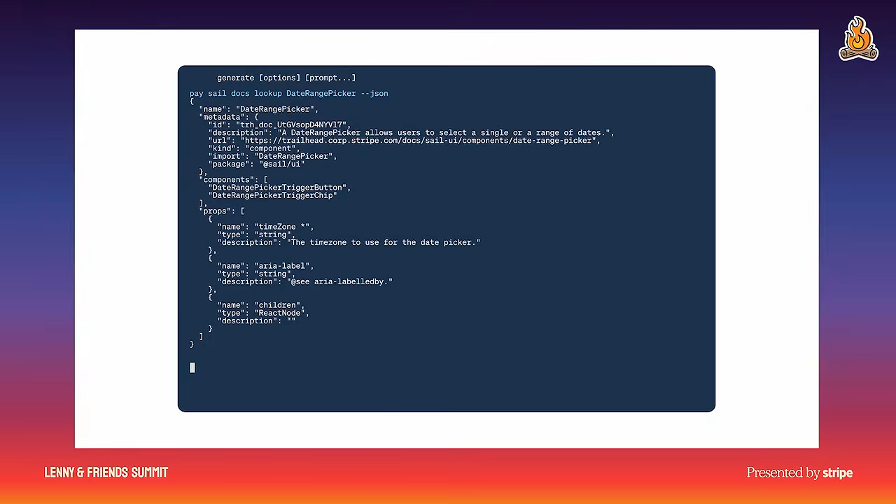
발표자는 이 CLI가 AI를 훨씬 '말 잘 듣게' 만드는 하네스라고 설명해요. 만드는 사람이 작업하는 바로 그 자리에 있고, 문서를 필요한 때와 곳에서만 읽어서 컨텍스트 로트를 피해요. 더 큰 차이는 담긴 내용이에요. 예전 디자인 시스템이 컴포넌트와 작은 부품을 모아 뒀다면, 지금은 전체 템플릿과 흐름까지 담아요. 아래 화면에는 단계별 작업 카드, 잔액 카드, 흐름도 같은 조각이 한데 모여 있어요.
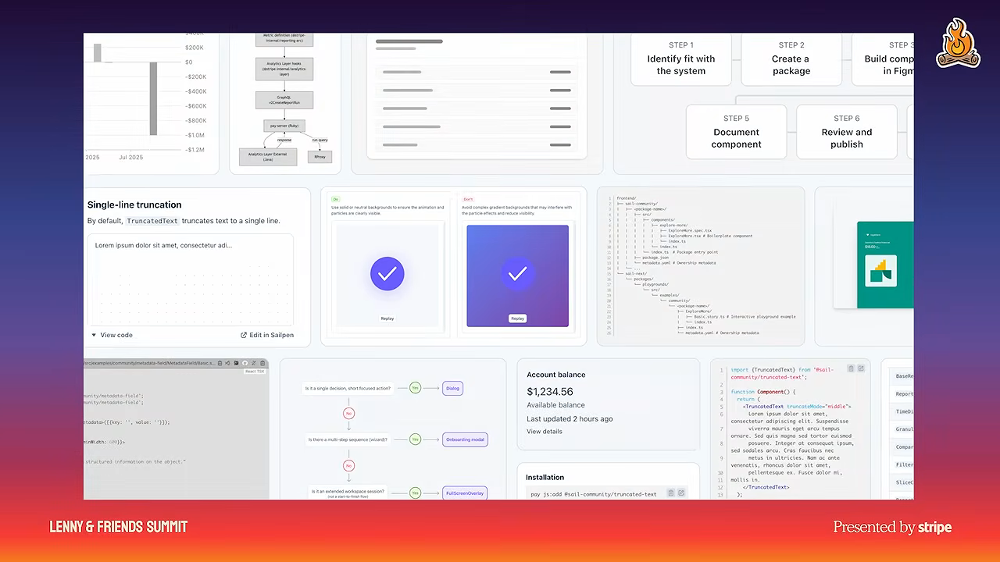
영상이 말한 변화를 표로 묶으면 이래요.
| 구분 | 예전 디자인 시스템 | 지금 Stripe의 시스템 |
|---|---|---|
| 빈칸은 누가 채우나요 | 방에 있는 디자이너 | 미리 적어 둔 결정 |
| 무엇을 담나요 | 컴포넌트와 작은 부품 | 전체 템플릿과 흐름까지 |
| AI가 읽는 방법 | 디자인 문서를 아는 MCP (결과가 사람마다 달랐어요) | 디자인 시스템 위 CLI 하네스 |
| 무엇을 넓히나요 | 일관성 | 의도 |
이렇게 기준을 만드는 도구 안에 심으면 제품이 더 한결같아져요. 하지만 발표자는 이게 바닥일 뿐이라고 덧붙여요.
제안 3: '끝남'과 '좋음'을 헷갈리지 않아요
세 번째 제안으로 넘어가기 전에 발표자는 건축가 Christopher Alexander의 말을 띄워요.
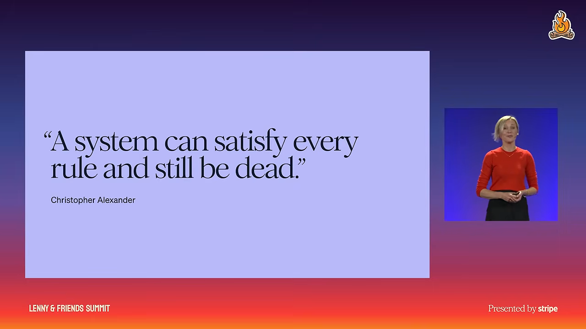
그래서 세 번째 제안은 '끝난 것'과 '좋은 것'을 헷갈리지 말라는 거예요. 발표자는 품질 필터가 사라졌다고 말해요. 정확히는 필터가 걸리는 자리가 옮겨 갔어요. 아래 그림의 위 줄은 예전, 아래 줄은 지금이에요. 점선 테두리가 거르는 일이 일어나는 자리예요. 지금 줄에서는 빨간 칸 한 곳에 몰려 있어요.
예전에는 아이디어가 20개 있어도 인력은 하나에만 붙일 수 있었어요. 그 뒤로도 찔러 보고, 따져 보고, 쳐내면서 제품이 비교적 차근차근 자랐어요. 이제는 아이디어 20개를 일주일 만에 다 만들 수 있어요. 발표자는 이게 여러모로 멋진 일이라고 인정해요. 가상의 제품을 두고 이론만 나누던 회의 대신, 손에 쥔 실물을 보고 반응할 수 있으니까요. 문제는 과정 곳곳에 있던 거름망이 '만든 뒤'로 몰렸다는 거예요. 이미 만들어진 걸 두고는 거절하기가 훨씬 어려워요.
그래서 편집자가 필요해요
발표자는 지금 시대에 편집자 역할이 아주 중요하다고 말해요. 조직에서 누가 처음부터 끝까지 보고, 우리가 정말 하나로 맞물린 전체를 만들고 있는지 판단하나요? 이건 새로 익혀야 하는 습관이에요. '만들었다'가 '끝났다'가 아니고, '끝났다'가 '좋다'가 아니라는 걸 몸에서 지워야 해요.
편집 실력을 키우려는 사람에게 발표자가 가장 강조하는 건 사용자처럼 직접 겪어 보기예요. 이런 질문을 던져 보래요.
- 정말 문제를 푸나요?
- 사용자가 생각하는 방식에 맞춰져 있나요?
- 앞뒤가 맞나요? 따로 보면 괜찮아도 사용자 여정으로 이으면 어긋나 보일 때가 많아요.
- 애초에 다 갖춘 상태인가요? 어떻게 하면 완성까지 밀어붙일 수 있을까요?
편집은 '좋다, 내보내지 마라'를 가르는 일에서 끝나지 않아요. 완성으로 밀어붙이는 일이기도 해요.
AI가 약한 곳을 알면 메울 수 있어요
발표자는 Nabeel S. Qureshi의 글 'What Makes Art Great?'를 소개해요. 화면에는 2026년 5월에 올라온 글 첫머리가 보여요. 발표자가 전하는 요지는 이래요. 위대한 예술은 '이런 것까지 생각했다고?' 싶은 뜻밖의 디테일, 표면 아래의 더 깊은 의미, 전체를 하나로 묶는 반복되는 주제에서 나와요. 모두 AI가 약한 부분이에요.
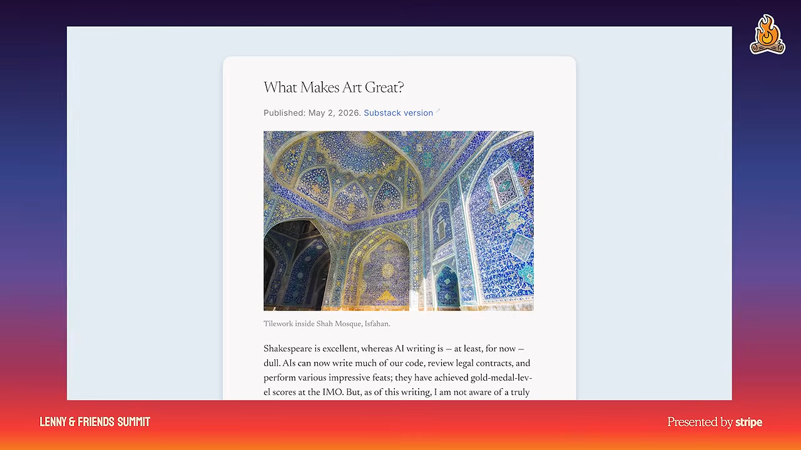
발표자는 이 글에서 AI 슬롭에 관한 문장 하나를 따로 슬라이드로 띄워요.
One of the things that so offends us about AI 'slop' images is a sense that the details don't matter. The cup is green, but it may as well have been blue.
AI 슬롭 이미지가 그토록 거슬리는 이유 하나는 디테일이 상관없다는 느낌이에요. 컵이 초록색이지만 파란색이어도 그만이었을 거예요.
— 영상 14:22
편집자는 모든 결정, 곧 모든 픽셀에 책임을 져요.
56번 고친 오프닝 애니메이션
발표자의 팀은 이 행사, Lenny & Friends Summit의 디자인을 맡았어요. 팀원 Stefan은 캠핑장 장면의 오프닝 애니메이션을 만들었는데, 먼저 3D 모델로 장면을 잡았어요. 아래는 텐트, 모닥불, 캠핑 밴을 회색 모델로 배치한 3D 작업 화면이에요.
그다음 AI로 여러 움직임을 만들었어요. 첫 버전은 아래처럼 색과 질감이 입혀진 장면이에요. 발표자는 멋지고 움직임도 괜찮지만, 픽셀 단위로 뜯어보면 어딘가 어색하다고 말해요. 움직임이 살짝 덜컥거리고, 장면을 더 보고 싶어진다는 거예요.
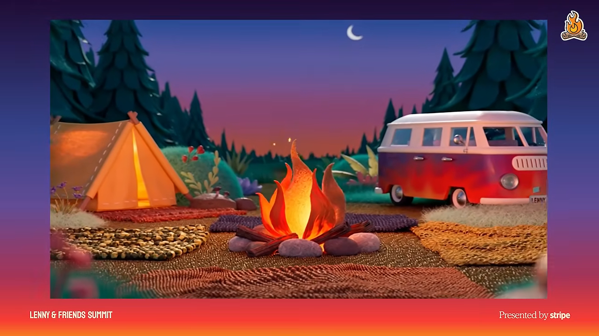
그래서 다시, 또 다시 만들었어요. 아래 슬라이드는 그 시도들을 작은 칸으로 빽빽하게 늘어놓아요. 모두 56번이었어요.
마지막 버전은 모닥불에 바짝 다가가요. 불꽃의 결과 주변 풀까지 살아 있어요. 발표자는 차이는 미묘하지만 사실감과 생기가 생겼고, 들인 정성이 느껴진다고 말해요.
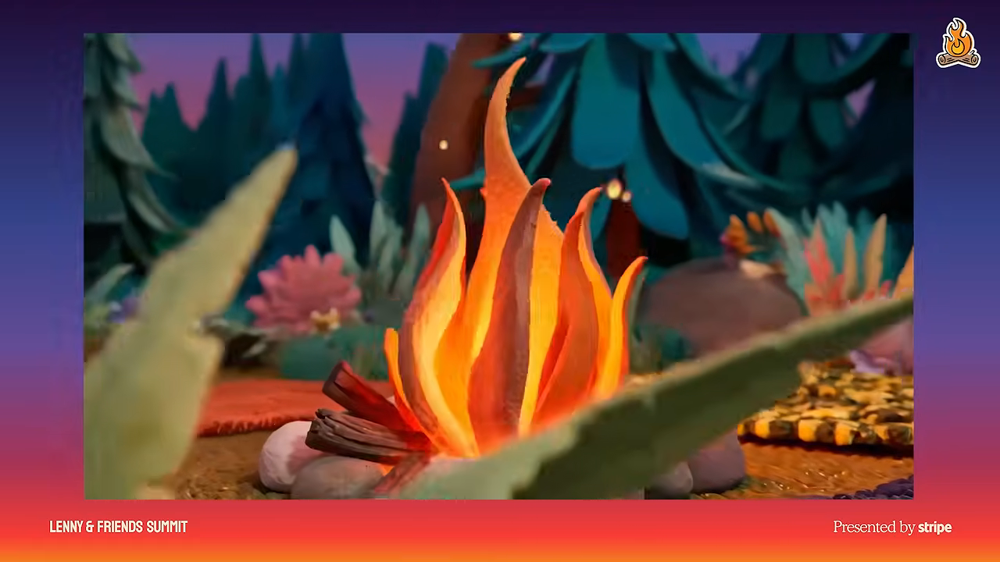
발표자가 인상 깊어한 건 AI의 역할이에요. AI가 없었다면 Stefan은 이렇게 복잡한 장면을 만들거나 이렇게 많은 시점을 시도하지 않았을 수도 있어요. 끈기와 꼼꼼한 검토가 필요했지만, AI가 시도할 수 있는 범위를 열어 줬다는 거예요.
제안 4: 창의성과 예술성을 풀어놓아요
네 번째 제안은 발표자가 가장 좋아한다는 제안이에요. 창의성과 예술성을 풀어놓으라는 거예요. AI는 단조로움을 찍어 내는 데 쓰일 수도 있지만, 지금까지 우리가 가진 것 중 가장 큰 창작 촉매이기도 해요. 모두가 뭔가를 만드는 시대에는 차별화가 더 어렵고, 그래서 더 중요해요.
채팅, 차트, CLI가 끝일 리 없어요
아래 슬라이드는 오늘날 인터페이스를 단순한 회색 카드 다섯 장으로 줄여 보여 줘요. 목록, 막대 차트, 꺾은선 차트, 표, 텍스트 창이에요. 발표자는 이런 채팅, 차트, CLI가 이 시대 인터랙션의 정점일 리 없다고 말해요.
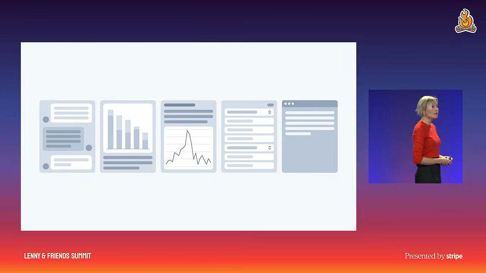
이제 컴퓨터와 말 그대로 대화할 수 있어요. 발표자는 새 인터페이스와 새 미감을 만들 때라고 말해요. 멀티터치가 완전히 새로운 인터랙션을 열고, 신시사이저가 새로운 소리를 열었던 것처럼요. 그리고 이 문장을 슬라이드 한가득 띄워요.
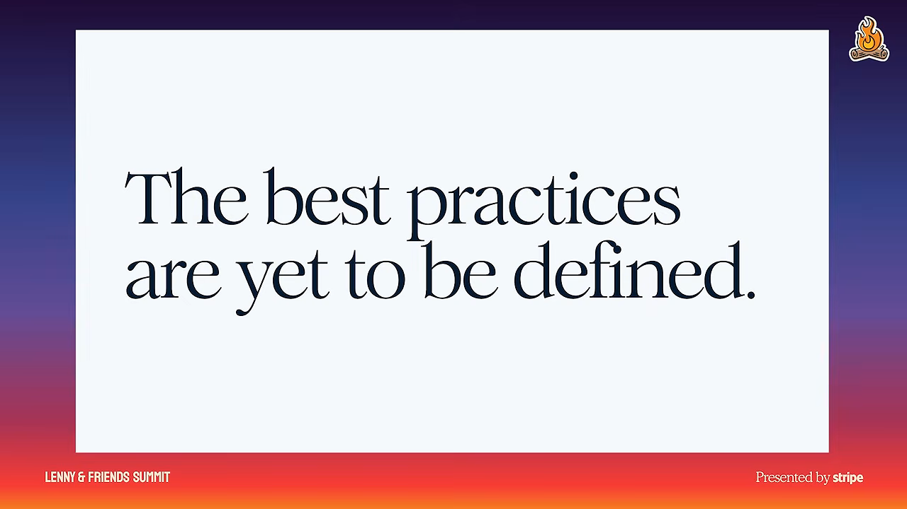
온라인에도 이런 시도가 많대요. 발표자는 Stripe 디자인 팀보다 더 흥미로운 데이터 시각화를 들고 나오는 사람들도 있다며 웃어요. 아래 트윗은 'Stripe dashboards are boring. So I built mine as a forest.'라는 글과 함께, 매출 데이터를 나무가 늘어선 숲 모양 입체 화면으로 보여 줘요.
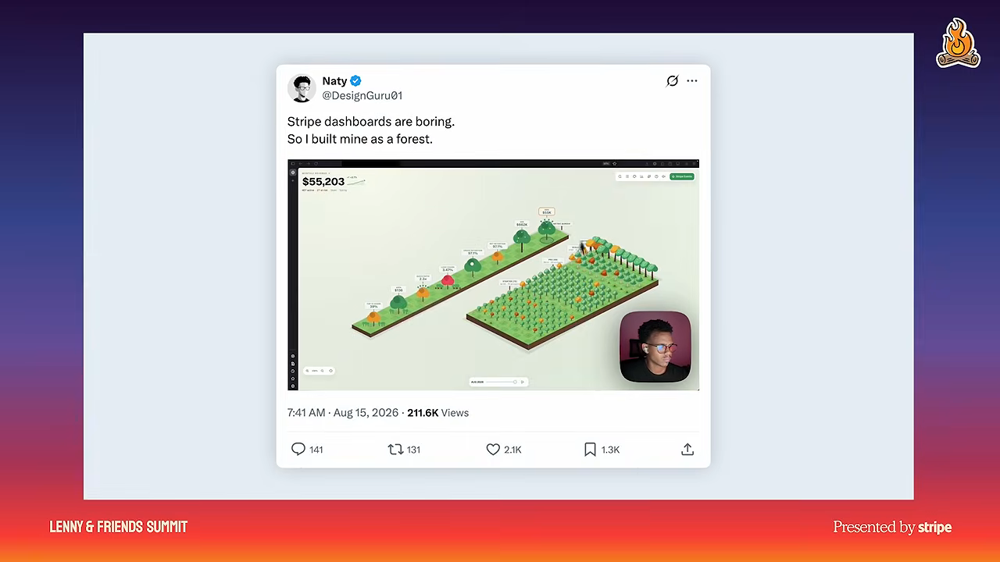
사람의 판단을 AI로 키운 Built to Grow 표지
Stripe 안에서도 AI로 크리에이티브 팀의 능력을 키우고 있어요. 최근 'Built to Grow' 표지는 사람 마블링 작가가 만들었어요. 아래는 초록, 주황, 파랑 물결무늬로 만든 표지 세 가지 버전이에요.
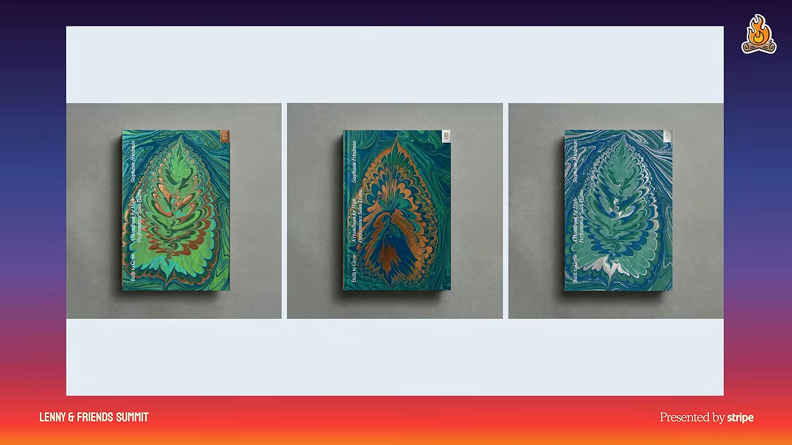
그다음 AI로 디테일을 더 다듬어 색과 선이 모두 제자리에 오게 했어요. 다음 슬라이드는 표지 세 권을 가운데 두고, 그 둘레에 비슷한 마블링 변형 수십 개를 깔아 둬요.
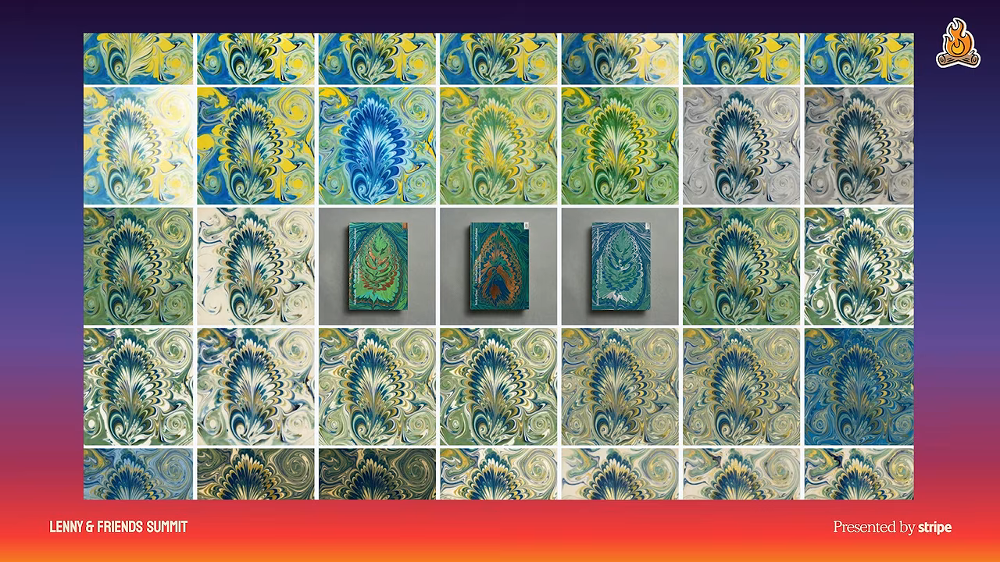
AI를 더 나은 창작 파트너로 쓰는 두 가지
| 할 일 | 이렇게 하지 말고 | 이렇게 해요 |
|---|---|---|
| 입력을 좋게 | "한국식 바비큐 식당 웹사이트가 필요해" | 우리가 믿는 것, 우리가 생각하는 좋은 것, 우리가 아끼는 것을 함께 적고, 기준을 세울 때 쓴 원자료도 넣어 AI가 다르게 생각하게 해요 |
| 출력을 몰아붙이기 | 부리토처럼 빨리 나온 결과에 만족하기 | 늘 한 단계 더 밀어요. 적대적 에이전트로 비평받고 흠집도 내 보되, 결국 스스로 더 나은 걸 요구해요 |
첫 줄의 바비큐 예시는 두 번째 섹션의 '그럴듯함' 이야기와 이어져요. 막연한 요청을 받은 AI는 가장 그럴듯한 사이트를 내놓으니까요.
더 어려운 건 문화예요
발표자는 위 두 가지가 전술일 뿐이고, 훨씬 어려운 건 문화라고 말해요. 틀에 박힌 패턴을 따르는 건 쉽고 안전하고 편해요. 현재 상태를 나아지게 하는 고유한 걸 찾는 건 훨씬 어렵지만 훨씬 인상적이에요. 그래서 팀을 이끈다면 이렇게 하래요.
- AI를 쓰라고만 하지 말고, 탐험할 여유를 줘요.
- '이상한 것'을 지켜 줘요(Protect the strange).
- AI가 만드는 비용을 낮췄으니, 아낀 몫의 일부를 정말 특별한 걸 만드는 데 써요.
AI로 이미 만들던 걸 더 빨리 만들기만 한다면 가장 흥미로운 부분을 놓치는 거예요. 발표자의 표현으로는 AI는 바닥만이 아니라 천장도 높일 수 있어요.
고딕 건축처럼, 만든 사람의 손길이 보이게
발표자는 마지막으로 네 가지 제안을 한 장에 다시 모아요. 관점을 가질 것, 기준을 기계에 심을 것, 끝난 것과 좋은 것을 헷갈리지 않을 것, 창의성과 예술성을 풀어놓을 것이에요.
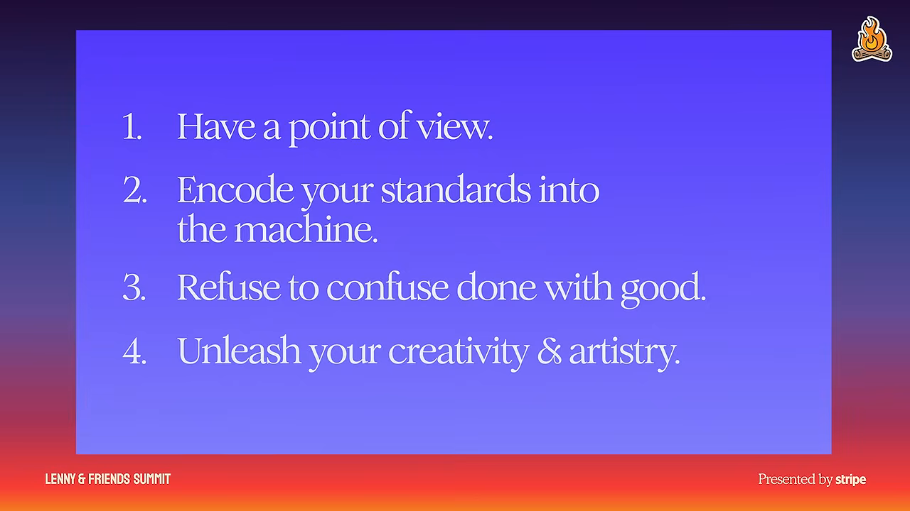
가장 중요한 건 아주 의도적이어야 한다는 거예요. AI로 살려 낼 관점, 시스템, 품질 기준, 야망 모두 내 것이어야 해요.
발표자는 처음의 전후 건축과 정반대 예로 고딕 건축을 꺼내요. 1850년쯤 존 러스킨은 품질과 장인 정신에 대해 많은 글을 쓰며 고딕 건축을 최고로 꼽았어요. 러스킨은 같은 고딕 건물이 하나도 없고, 기둥 하나조차 서로 같지 않다는 걸 알아챘어요. 아래 슬라이드의 장식 문, 창살, 기둥머리 조각도 저마다 모양이 달라요.
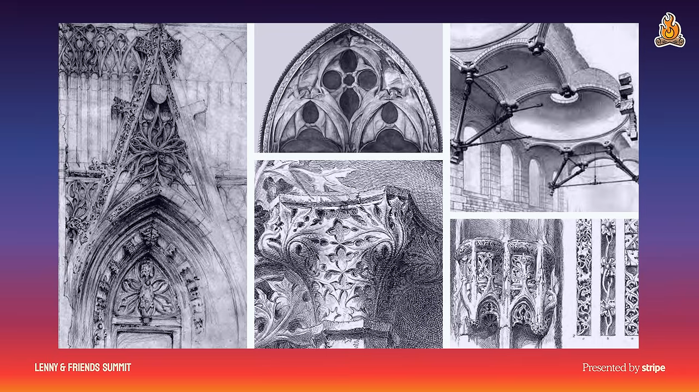
사용자가 원하는 것도 이거예요. 발표자는 사용자가 Three.js와 Blender로 30분 만에 만든 애니메이션에 감탄하지 않는다고 말해요. 사용자는 자기 문제를 풀어 주는 것, 필요를 미리 알아챈 영리한 디테일, 개성 있는 브랜드에 감탄해요.
We have the choice in this building boom to not make the digital equivalent of zombie buildings.
이번 건축 붐에서는 좀비 건물의 디지털 버전을 만들지 않는 쪽을 고를 수 있어요.
— 영상 21:10
발표자는 이 시기를 창작의 르네상스로 만들자며, 더 강력하면서도 만든 사람의 손길과 정성이 보이는 제품을 만들자는 말로 발표를 마쳐요.